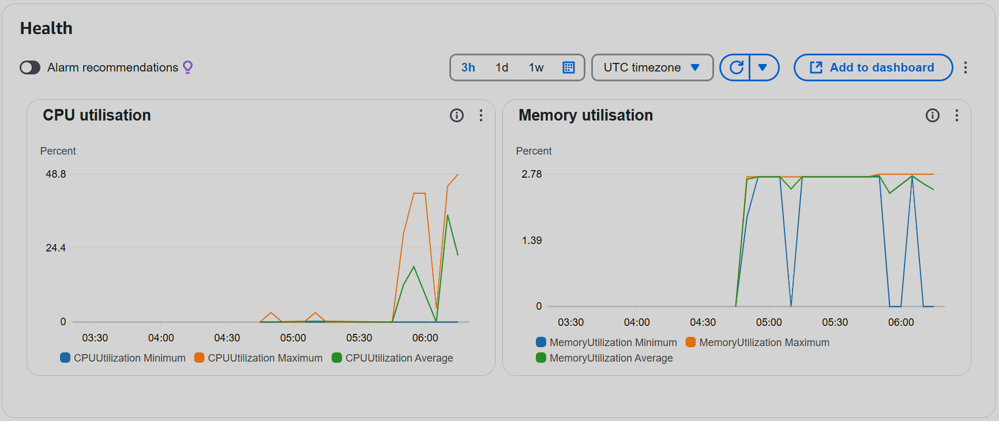

Aside
Github Classroom links for this practical can be found on Edstem: https://edstem.org/au/courses/21491/discussion
Our goal is to scale out the stateless component of the TaskOverflow application across multiple compute instances. Specifically we need to:
Route traffic to our deployed TaskOverflow application with a load balancer.
Scale out TaskOverflow instances with autoscaling.
Check the status of our instances with a healthcheck.
Dynamically scale our application based on load.
Load balancing distributes a load over a set of resources. For example, balancing network traffic across several servers. Load balancing is crucial to the scalability of modern systems, as often, one physical device cannot manage the volume of requests or the processing demand (e.g. the large amount network traffic for a large website).
A service which balances load across resources, is called a Load Balancer.
A load balancer can implement many techniques to select which resource to route incoming requests toward, these techniques are the load balancer’s routing algorithm.
Below are several common routing techniques. There are many other generic and bespoke routing algorithms that are not listed.
allocates requests to the next available server regardless of where the last request was sent. It is simple, and in practice, works effectively.
sends the next request to the node with the fewest current connections. The load balancer is responsible for tracking how many connections exist to each node.
sends the next request to the node with the least weighted connections. This is similar to the above least connections method, however, each node has an associated weight. This allows certain nodes to be preferred over others. This is useful if we have an inequal distribution of compute power. We would want to give smaller nodes a reduced load in comparison to other more powerful nodes.
In some cases we may want a user to consistently be routed to a specific node. This is useful for multiple transactions that need to be done in a consistent order or if the data is stored/cached on the node. This can be done by hashing the information in the request payload or headers and then routing the request to the node that handles hashes in the range of the computed hash.
When load balancing, it is important to ensure that the nodes to which we route requests are able to service the request. A good health check can save or break your service. Consider the two following examples from UQ’s Information Technology Services (ITS):
Example 1 Early in my career, I, Evan Hughes, setup a multi-node Directory Server at UQ under the hostname of ldap.uq.edu.au. This server was a NoSQL database which implemented the LDAP protocol and supported UQ Authenticate, UQ’s Single Sign-On service.
The service had a load balancer which checked that port 389 was open and reachable. This worked well most of the time. However, the health check was too weak. When
The health check passed, but in reality, the service was talking to dead nodes, causing upstream services to have intermittent failures.
Example 2
During the rollout of a new prompt for UQ Authenticate, which required users to go to my.UQ to provide
verified contact details – the Blackboard (learn.uq.edu.au) service went completely offline. The health check for
Blackboard at the time completed a full authentication as a test user to ensure everything was functioning as
expected. Once this user was enrolled into the new rollout, the health checks started reporting failures and within
a matter of minutes the entire pool of nodes were shutdown. This health check was too broad and was not
isolated enough to the service that it was checking.
A lot of services provide a health check endpoint or a metrics endpoint to help engineers setup a proper level of health check. We want a health check that is specific enough for the service that it is checking but not so specific that it is too brittle. For the TaskOverflow application that we are building, a reasonable health check would be that the health endpoint ensures the database is available and that the application is able to connect to it.
Not all load balancers are the same. Some load balancers inspect the transmitted packets to correctly route the packet. We will cover two types of load balancers provided by AWS.
is an OSI layer 71 load balancer which routes traffic based on the request’s content. This is useful for services using HTTP, HTTPS, or any other supported protocol.
is an OSI layer 42 load balancer which routes traffic based on the source and destination IP addresses and ports. This is useful for services that are using TCP or UDP.
An AWS Elastic3 Load Balancer has three distinct components.
allows traffic to enter the Elastic Load Balancer. Each listener has a port (e.g. port 80) and a protocol (e.g. HTTP) associated with it.
are groups of nodes which the load balancer can route to. Each target group has a protocol and a port associated with it, allowing us (the programmer) to switch ports on the way through the load balancer. This is useful if the targets are using a different port to the ports we want to expose.
is the actual load balancer that routes the traffic to the target groups based on rules that we setup. The load balancer has a DNS name that we can use to route traffic to it. The load balancer also has a security group that we can use to control what traffic can enter the load balancer.
Instead of creating the maxiumum amount of services we predict we will need, we can automatically scale the number of nodes we need to minimise resources. When the load is low, we operate with minimal nodes. When the load is high, we increase the number of nodes available to cope.
To compute the resources needed, AWS relies on triggers from CloudWatch and scaling policies. Some pre-made triggers are based around a node’s
CPU usage,
memory usage, or
network usage.
We create custom triggers based on our application’s metrics.
This week we are going to explore load balancing the TaskOverflow service that we have been working with. The aim is to have a service that, when given a lot of requests, will be able to scale out the web server instances to handle it. This will not be a full solution to the scaling issue as our database is still a single node, but it will be a good start.4 Other methods could also be employed to help deal with the load like caching but we will leave that for another day.
This week we need to create an Application Scaling Policy for our ECS service, and a Load Balancer to handle the routing of our service. Our goal is to implement the deployment diagram below.

Last week, when we setup the ECS service, we noticed that we could not get an endpoint because the instance would only be provisioned after our Terraform code had run. This is because ECS is a dynamic scaling service and it expects a load balancer to route its traffic. To get started we need to create a target group which defines where traffic can be routed to.
» cat lb.tf
resource "aws_lb_target_group" "taskoverflow" { name = "taskoverflow" port = 6400 protocol = "HTTP" vpc_id = aws_security_group.taskoverflow.vpc_id target_type = "ip" health_check { path = "/api/v1/health" port = "6400" protocol = "HTTP" healthy_threshold = 2 unhealthy_threshold = 2 timeout = 5 interval = 10 } }
Load balancing is core to how ECS works, so the aws_ecs_service resource that we used last week accepts a load_balancer block. To associate the target group with our ECS service, modify the given aws_ecs_service.taskoverflow resource to include a load_balancer block.
» cat ecs.tf
load_balancer { target_group_arn = aws_lb_target_group.taskoverflow.arn container_name = "taskoverflow" container_port = 6400 }
With the internal side of the load balancer done, we can create it and a firewall for the external side. This firewall allows us to restrict what traffic will be allowed to reach the load balancer.

» cat lb.tf
resource "aws_lb" "taskoverflow" { name = "taskoverflow" internal = false load_balancer_type = "application" subnets = data.aws_subnets.private.ids security_groups = [aws_security_group.taskoverflow_lb.id] } resource "aws_security_group" "taskoverflow_lb" { name = "taskoverflow_lb" description = "TaskOverflow Load Balancer Security Group" ingress { from_port = 80 to_port = 80 protocol = "tcp" cidr_blocks = ["0.0.0.0/0"] } egress { from_port = 0 to_port = 0 protocol = "-1" cidr_blocks = ["0.0.0.0/0"] } tags = { Name = "taskoverflow_lb_security_group" } }
Now over to the external side of the load balancer. We need to create a listener which is the entry point for the load balancer.

» cat lb.tf
resource "aws_lb_listener" "taskoverflow" { load_balancer_arn = aws_lb.taskoverflow.arn port = "80" protocol = "HTTP" default_action { type = "forward" target_group_arn = aws_lb_target_group.taskoverflow.arn } }
If we deployed now, we would have implemented the deployment diagram above. However, we want to add autoscaling to our service so that it can scale up and down based on the load.
» cat autoscaling.tf
resource "aws_appautoscaling_target" "taskoverflow" { max_capacity = 4 min_capacity = 1 resource_id = "service/taskoverflow/taskoverflow" scalable_dimension = "ecs:service:DesiredCount" service_namespace = "ecs" depends_on = [ aws_ecs_service.taskoverflow ] } resource "aws_appautoscaling_policy" "taskoverflow-cpu" { name = "taskoverflow-cpu" policy_type = "TargetTrackingScaling" resource_id = aws_appautoscaling_target.taskoverflow.resource_id scalable_dimension = aws_appautoscaling_target.taskoverflow.scalable_dimension service_namespace = aws_appautoscaling_target.taskoverflow.service_namespace target_tracking_scaling_policy_configuration { predefined_metric_specification { predefined_metric_type = "ECSServiceAverageCPUUtilization" } target_value = 20 } }
This auto scaling policy looks at the average CPU utilization of the service and scales up if it is above 20% and scales down if it is below 20%. This is a very simple policy but it is a good starting point. We can now deploy our service and see it scale up and down.
The next section describes how to send multiple requests to our service to generate traffic to trigger scaling. This means we need to know the IP address or DNS name of our service. We could look this up in the AWS console but, in most environments (including the cloud infrastructure assignment), you will want to retrieve this data automatically. The first Terraform practical described how to output the IP address of an EC2 instance [3]. Similarly, we can output the DNS name of our load balancer.
» cat lb.tf
output "taskoverflow_dns_name" { value = aws_lb.taskoverflow.dns_name description = "DNS name of the TaskOverflow load balancer." }
We have a service but just visiting it in a web browser is not going to be enough load for our scaling policies to trigger. To test the scaling policies, we will employ the help of a tool called k6, which is a load testing tool. To install k6 visit https://k6.io/docs/get-started/installation/. It can be installed in the code spaces environment or locally.
We have provided an example k6 file, which is JavaScript code that creates 1000 to 5000 users to call the list endpoint of our service.
» cat k6.js
import http from 'k6/http'; import { sleep, check } from 'k6'; export const options = { stages: [ { target: 1000, duration: '1m' }, { target: 5000, duration: '10m' }, ], }; export default function () { const res = http.get('http://your-loadBalancer-url-here/api/v1/todos'); check(res, { 'status was 200': (r) => r.status == 200 }); sleep(1); }
We can then run this file using the following command.
execution: local script: load.js output: - scenarios: (100.00%) 1 scenario, 5000 max VUs, 11m30s max duration (incl. graceful stop): * default: Up to 5000 looping VUs for 11m0s over 2 stages (gracefulRampDown: 30s, gracefulStop: 30s) running (00m05.4s), 0091/5000 VUs, 140 complete and 0 interrupted iterations default [--------------------------------------] 0091/5000 VUs 00m05.4s/11m00.0s
With all the pieces together we can now see if our efforts have paid off. While the k6 code from above is running, let’s go to the ECS console and see if we can see any scaling events. Navigate to ECS -> Clusters -> taskoverflow -> Services -> taskoverflow -> Configuration.
In this panel we can see our Auto Scaling configuration which lists the desired, minimum and maximum number of tasks. The policies describing the auto scaling rules are listed just below.
The Health and metrics tab displays CPU and memory utilization.

The Tasks tab displays a log of tasks with their last and desired status.
Open the CloudWatch Alarm panel. You will notice that we have two different alarms. These are for the scaling up and down of the service. Select an alarm and you can view its status. The “In alarm” status is when the auto scaling configuration needs to action increasing/decreasing the number of instances.
Aside
The deployment diagram below is what it would look like, if we wanted to use a load balancer with the TaskOverflow application deployed on EC2 instances. The main difference still being the features that ECS provides to manage services and tasks for us.

You have now deployed a scalable stateless service. You should experiment with generating different loads for the service, please read through the k6 documentation5.
In the cloud infrastructure assignment6, we will use k6 to test various scenarios as described in the task sheet and evaluate how your service performs. You will want to be familiar with how load testing works, so that you can test your scalable implementation.
[1] B. Webb, R. Thomas, and G. Bai, “Distributed systems II slides,” March 2025. https://csse6400.uqcloud.net/slides/distributed2.pdf.
[2] B. Webb and R. Thomas, “Distributed systems II,” March 2024. https://csse6400.uqcloud.net/handouts/distributed2.pdf.
[3] E. Hughes, R. Thomas, and B. Webb, “Getting started with the cloud,” vol. 4 of CSSE6400 Practicals, The University of Queensland, March 2025. https://csse6400.uqcloud.net/practicals/week04.pdf.
1OSI layer 7: Application, in this case HTTP/HTTPS/etc
2OSI layer 4: Transport, in this case TCP/UDP
3Elastic, in a cloud computing context, refers to the system’s ability to adapt to workload by starting and stopping infrastructure services to meet demand.
4We will not explore scaling persistent data in the practicals. If you wish to try in your assignment, please see some of the concepts presented in the Distributed Systems II lecture [1] and notes [2].